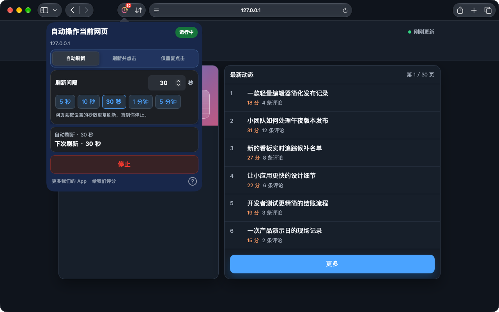
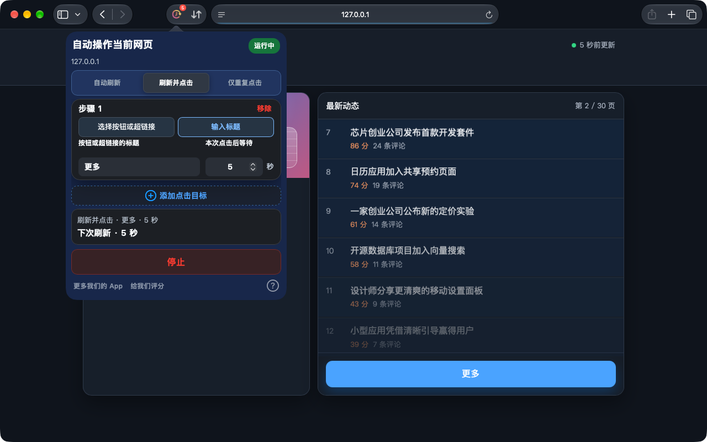
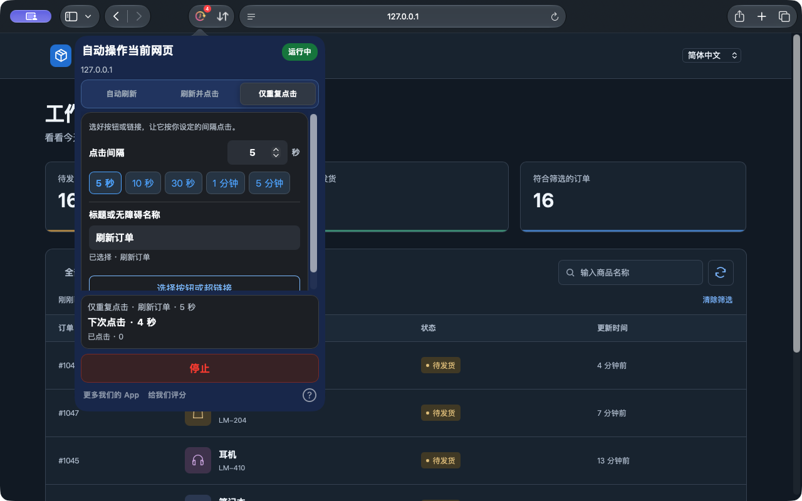

自动刷新
选择常用时间或输入精确间隔，让看板、库存和状态页面保持更新。
设置自动刷新Safari 适用于 iPhone、iPad 和 Mac，Chrome 扩展适用于电脑。
有的网页需要刷新，有的只需要点一下。Auto Refresh & Clicker 帮你在 Safari 网页中重复这些操作，让你腾出手做别的事。
在浏览器中运行，无需注册账户。
Safari 版现已支持选择图标按钮和仅重复点击。Chrome 版单独更新，具体功能请查看对应商店的说明。
看看如何运行


Mac 上的 Safari 1.10.0 · 在本地演示网页中实际拍摄
从持续更新的看板，到需要反复点击的按钮，为当前网页选择合适的任务。
几步完成设置，随时确认运行状态。
安装后先打开 App，在 Safari 设置中启用扩展，并允许访问目标网站。
选好模式，再设置间隔或每步等待时间。需要点击时，可以直接选择网页上的按钮或链接，也可以输入标题。
点击开始，查看运行状态与倒计时；随时停止，或应用更改以更新任务。
任务在 Safari 网页或桌面 Chrome 扩展中执行，不支持其他 App 或系统界面的自动操作。
安装后先打开一次 App，再查看 Safari 设置 → 扩展。请使用 Safari 15.4 或更新版本。如果仍未出现，请联系支持，并附上 macOS、Safari、App 版本及安装来源。
无法保证持续后台运行。iOS 和 iPadOS 可能暂停浏览器任务，执行任务时请保持 Safari 在前台。
当前 Safari 版本支持修改配置后点击“应用更改”。任务摘要显示正在使用的配置，点击“停止”即可结束。
Safari 适用于 iPhone、iPad 和 Mac，Chrome 扩展适用于电脑。
当前价格与兼容性以各商店页面为准。